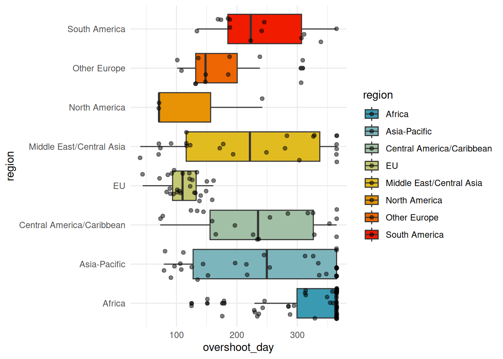
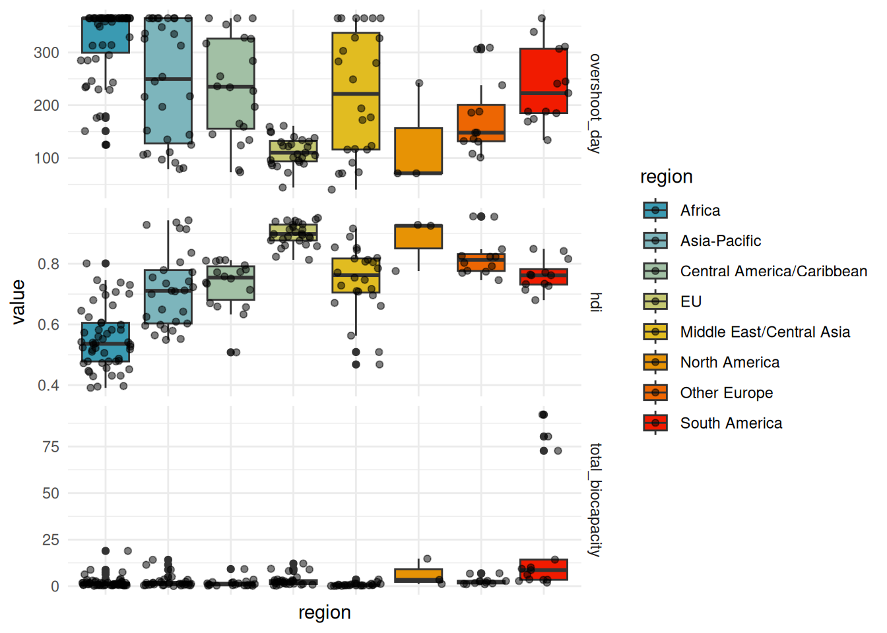
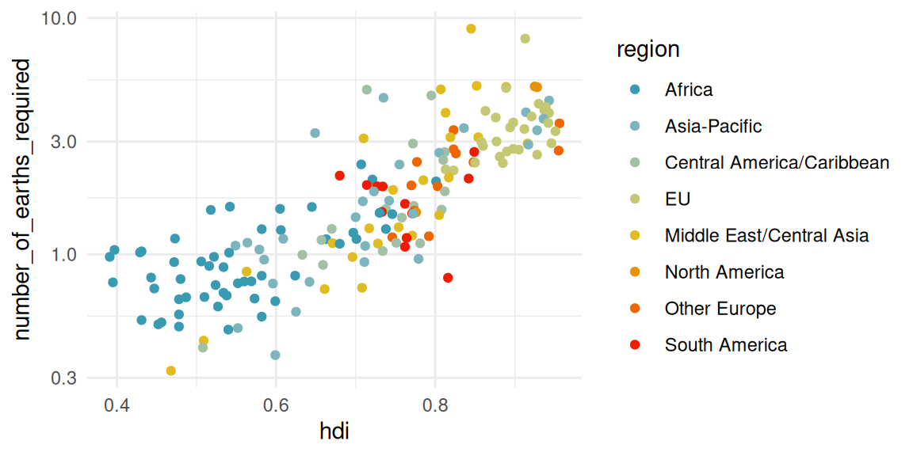
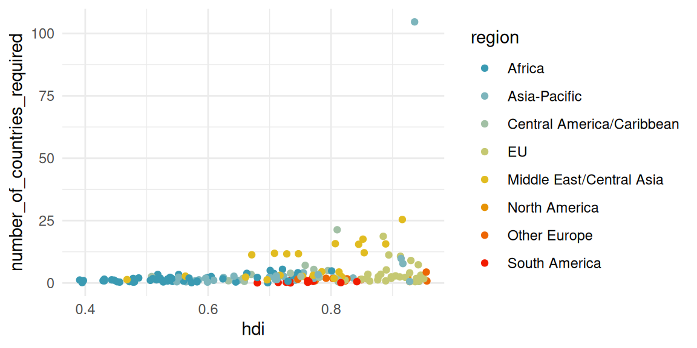

library(tidyverse)
library(readxl)
theme_set(theme_minimal())
load("data/countries_comp.RData")
load("data/countries.RData")
#Identify countries by their names
pal <- wes_palette(8, name = "Zissou1", type = "continuous") # nice color based on wesanderson mooviePrincipal Component Analysis – Labs
Data Description
The dataset used in this lab comes from the website It contains ecological footprint and biocapacity results for 184 countries_comp.
Some Vocabulary
More details can be found here
Global hectare (gha): It is the unit chosen to express all quantities of interest regarding Carbon consumption/emission. A unit of area corresponding to the average productivity of one hectare of world land. An hectare of farmland will be worth more global hectares than an hectare of desert.
Ecological footprint (in gha): The number of gha required to produce the needs and absorb the waste of a country.
Biocapacity (in gha): Biocapacity is given in gha per year, per country, and by land type. It translates the (actual) surface area of different land types in a country into gha, considering the climate, agricultural techniques, etc.
number_of_earths_required (one value per country): The number of Earths needed if everyone lived like the people in the given country (number of gha per person in the country / 1.583 (number of gha per inhabitant of the Earth, this figure is updated every year))
number_of_country_required (one per country): The number of countries_comp required for the country to be self-sufficient (e.g., Japan has 0.6 gha per inhabitant, uses 4.6 gha per year, so 4.6/0.6 Japan per year, Japan consumes 4.6/0.6 times what it is able to produce)
Variables Description
We can divide the variables into three groups:
- The socio-economic data of the country: “country” (the country), “data_quality”, “sdgi” (Sustainable Development Goals Index: an index indicating how close each country is to achieving sustainable development goals), “life_expectancy”, “hdi” (Human Development Index), “per_capita_gdp”, “region”, “income_group”, “pop”.
The other two categories are given in gha by land type:
cropland (food and fiber for human consumption, livestock feed, oilseeds, and rubber)
grazing (for livestock)
forest (for wood and timber)
fish (for fish, counted based on the maximum sustainable yield for various fish species, then translated into product quantities)
builtup (built-up area)
total: represents the total ecological footprint.
Productions (ending in _prod) They represent in gha the production of a country for each type of land, summing what is harvested and what is wasted per year. (For forest, for instance, it’s the area required to reproduce all the wood harvested.) (for cropland, grazing, forest, fish, built_up, carbon, total)
Biocapacities (ending in _bioc) They translate the actual surface area of different land types in a country into gha, considering the climate and agricultural techniques.
Consumptions by land type (ending in _cons) They represent in gha the consumption of a country (i.e., the number of gha it produces minus the number it exports plus the number it imports). These data are available by land type because different imported and exported products are linked to different land types.
Remarks: Built-up areas have the same values for cons, prod, and biocapacity. It is considered that all built-up areas are used within the country. To avoid considering the same variable three times, we will only keep one.
Import data
The data have been prepared to be easy more easy to manipulate. The preparation script is available on the Github repository and is named footprint_prep.qmd. The resulting datasets are available as a.RData object data/countries_comp.RData and data/countries.RData. The first one is a simplified version focusing on the socio economic variables.
Descriptive analysis
- Conduct a brief descriptive study of the different variables
summary(countries) data_quality sdgi life_expectancy hdi
Length:184 Min. :38.30 Min. :52.80 Min. :0.3910
Class :character 1st Qu.:58.75 1st Qu.:67.05 1st Qu.:0.5820
Mode :character Median :68.30 Median :73.82 Median :0.7350
Mean :66.69 Mean :72.29 Mean :0.7146
3rd Qu.:74.20 3rd Qu.:77.44 3rd Qu.:0.8230
Max. :85.90 Max. :84.21 Max. :0.9560
NA's :21 NA's :8 NA's :7
per_capita_gdp region income_group pop
Min. : 210.8 Length:184 Length:184 Min. : 0.0716
1st Qu.: 1756.2 Class :character Class :character 1st Qu.: 2.7964
Median : 5467.9 Mode :character Mode :character Median : 9.6092
Mean : 13839.4 Mean : 41.4348
3rd Qu.: 15881.8 3rd Qu.: 29.5638
Max. :111380.6 Max. :1459.3800
NA's :12
cropland_prod grazing_prod forest_product_prod fish_prod
Min. :0.000846 Min. :0.00000 Min. :0.000492 Min. :0.000000
1st Qu.:0.154880 1st Qu.:0.02598 1st Qu.:0.091821 1st Qu.:0.003108
Median :0.332667 Median :0.09402 Median :0.224672 Median :0.026386
Mean :0.475706 Mean :0.26175 Mean :0.543812 Mean :0.184808
3rd Qu.:0.568109 3rd Qu.:0.20968 3rd Qu.:0.482257 3rd Qu.:0.116898
Max. :2.751370 Max. :5.44232 Max. :8.136008 Max. :5.518731
NA's :22 NA's :22 NA's :22 NA's :22
carbon_prod total_prod cropland_cons grazing_cons
Min. : 0.009275 Min. : 0.3001 Min. :0.08915 Min. :0.00000
1st Qu.: 0.215931 1st Qu.: 1.2149 1st Qu.:0.37924 1st Qu.:0.07877
Median : 0.832324 Median : 1.9104 Median :0.53177 Median :0.17775
Mean : 1.506820 Mean : 2.9263 Mean :0.54153 Mean :0.25956
3rd Qu.: 2.066430 3rd Qu.: 3.7680 3rd Qu.:0.68909 3rd Qu.:0.31387
Max. :11.810378 Max. :12.0559 Max. :1.49325 Max. :4.44132
NA's :22 NA's :1 NA's :22 NA's :22
forest_product_cons fish_cons carbon_cons total_cons
Min. :0.02045 Min. :0.000756 Min. : 0.03487 Min. : 0.5085
1st Qu.:0.16786 1st Qu.:0.025297 1st Qu.: 0.32282 1st Qu.: 1.5073
Median :0.25760 Median :0.068960 Median : 1.16135 Median : 2.3916
Mean :0.42907 Mean :0.149919 Mean : 1.73370 Mean : 3.1477
3rd Qu.:0.49035 3rd Qu.:0.141522 3rd Qu.: 2.57061 3rd Qu.: 4.3699
Max. :4.03395 Max. :5.144393 Max. :12.82295 Max. :14.2710
NA's :22 NA's :22 NA's :22 NA's :1
cropland_bioc grazing_land_bioc forest_land_bioc fishing_ground_bioc
Min. :0.000846 Min. :0.00000 Min. : 0.00000 Min. : 0.00000
1st Qu.:0.154880 1st Qu.:0.04866 1st Qu.: 0.07533 1st Qu.: 0.01944
Median :0.332667 Median :0.13673 Median : 0.30881 Median : 0.10781
Mean :0.475706 Mean :0.41283 Mean : 2.44214 Mean : 0.59577
3rd Qu.:0.568109 3rd Qu.:0.37282 3rd Qu.: 1.29848 3rd Qu.: 0.33874
Max. :2.751370 Max. :7.22182 Max. :78.24552 Max. :13.73367
NA's :22 NA's :22 NA's :22 NA's :22
builtup_ total_biocapacity ecological
Min. :0.00000 Min. : 0.0567 Min. :-13.3506
1st Qu.:0.03735 1st Qu.: 0.6328 1st Qu.: -2.0697
Median :0.05612 Median : 1.2998 Median : -0.7640
Mean :0.06658 Mean : 3.6791 Mean : 0.5313
3rd Qu.:0.08554 3rd Qu.: 2.7252 3rd Qu.: 0.2094
Max. :0.22554 Max. :92.1399 Max. : 90.2615
NA's :22 NA's :1 NA's :1
number_of_earths_required number_of_countries_required
Min. :0.3213 Min. : 0.02039
1st Qu.:0.9524 1st Qu.: 0.89307
Median :1.5112 Median : 1.83882
Mean :1.9889 Mean : 3.73551
3rd Qu.:2.7612 3rd Qu.: 3.08943
Max. :9.0173 Max. :104.61627
NA's :1 NA's :1
overshoot overshoot_day
Min. :2018-02-10 11:28:07.17 Min. : 40.0
1st Qu.:2018-04-27 15:37:18.96 1st Qu.:131.5
Median :2018-06-17 10:29:52.94 Median :241.0
Mean :2018-07-09 11:40:43.92 Mean :238.0
3rd Qu.:2018-09-12 11:15:33.48 3rd Qu.:365.0
Max. :2018-12-26 08:45:50.03 Max. :365.0
NA's :52 NA's :1 a. Represent, by world region, the overshoot day, and then the development indices (hdi, sdgi)countries_comp %>%
ggplot(aes(y = overshoot_day, fill = region, x = region)) + geom_boxplot() +
scale_fill_manual(values=pal) +
geom_point(alpha=0.5, position = "jitter") + coord_flip()Warning: Removed 1 row containing non-finite outside the scale range
(`stat_boxplot()`).Warning: Removed 1 row containing missing values or values outside the scale range
(`geom_point()`).
countries_comp %>%
select(overshoot_day, hdi, region, total_biocapacity) %>%
pivot_longer(cols = -"region", names_to = "type", values_to = "value") %>%
mutate(type = factor(type, c("overshoot_day", "sdgi", "hdi", "total_biocapacity"))) %>%
ggplot(aes(y = value, fill = region, x = region)) +
geom_boxplot() + geom_point(alpha = 0.5, position = "jitter") +
facet_grid(type ~ ., scale = "free_y") + scale_fill_manual(values = pal) + scale_color_manual(values = pal) +
theme(axis.text.x = element_blank())Warning: Removed 9 rows containing non-finite outside the scale range
(`stat_boxplot()`).Warning: Removed 9 rows containing missing values or values outside the scale range
(`geom_point()`).
- Represent the overshoot day according to the human development index, then the number of countries_comp, then the number of Earths required per country. Make a representation allowing a visual comparison of world regions. (You can display certain countries_comp using ggrepel::geom_label_repel(aes(label = country))|)
countries_comp %>%
ggplot(aes(x = hdi, y = overshoot_day, color = region)) +
geom_point() +
scale_colour_manual(values = pal) # + ggrepel::geom_label_repel(aes(label = country))Warning: Removed 8 rows containing missing values or values outside the scale range
(`geom_point()`).##earths
countries_comp %>%
ggplot(aes(x = hdi, y = number_of_earths_required, color = region)) +
geom_point() +
scale_colour_manual(values = pal) # + ggrepel::geom_label_repel(aes(label = country))Warning: Removed 8 rows containing missing values or values outside the scale range
(`geom_point()`).countries_comp %>%
ggplot(aes(x = hdi, y = number_of_earths_required, color = region)) +
geom_point() +
scale_colour_manual(values = pal) +
#ggrepel::geom_label_repel(aes(label = country)) +
scale_y_log10()Warning: Removed 8 rows containing missing values or values outside the scale range
(`geom_point()`).
## countries_comp
countries_comp %>%
ggplot(aes(x = hdi, y = number_of_countries_required, color = region)) +
geom_point() +
scale_colour_manual(values = pal) # + ggrepel::geom_label_repel(aes(label = country))Warning: Removed 8 rows containing missing values or values outside the scale range
(`geom_point()`).
countries_comp %>%
ggplot(aes(x = hdi, y = number_of_countries_required, color = region)) +
geom_point() + scale_y_log10() +
scale_colour_manual(values = pal) # + ggrepel::geom_label_repel(aes(label = country))Warning: Removed 8 rows containing missing values or values outside the scale range
(`geom_point()`).Principal Component Analysis
- Perform a PCA on the countries_comp.
#|echo: true
#|eval: false
# library(Factoshiny)
# PCAshiny(countries_comp)
# res.PCA<-PCA(countries_comp,quali.sup=c(4,7),graph=FALSE)
# plot.PCA(res.PCA,choix='var')
# plot.PCA(res.PCA)Discuss the quality of the representation on the first principal plan.
How many axis should you consider?
Which variables are well represented?
Could you discuss the link between
total_consandovershoot_day,popandovershoot_day,number_of_countries_requiredandovershot_day.Cite the countries which contribute the most to the different axis.
If you choose to consider
overshoot_dayas a supplementary variable, are you confident to be able to predict it with other variables ?
Principal Component Analysis
- Explore the whole dataset
countries. Remember that PCA is, at first, a solution to visualize the data and you are free to use it as you want.